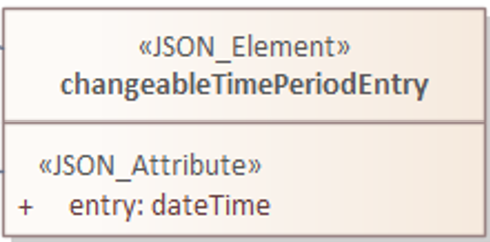

Welcome
Welcome to the Interactive User Guide. You can use the search controls at the top of the page to search for relevant keywords and the navigation bar to move between sections of this document.
This document is also connected to the UML diagram, which you can open in another tab from the "Tour of the Data Model" section.
1 Digital Traffic Regulation Orders
1.1 Introduction
The Department for Transport (DfT) is modernising the regulatory framework for Traffic Regulation Orders (TROs) (Traffic Management Orders in London) made under the Road Traffic Regulation Act 1984.
The new regulatory framework will, subject to necessary legislation coming into force, mandate that traffic authorities in England publish TROs as open data in a standardised and digital format that anyone can access, use and share. The standardised digital format will be based on the Digital TRO (D-TRO) Data Model that is described in this document – called the Data Model throughout the remainder of this document. The Data Model is intended to be a free resource for all. The Data Model is candidate in nature and may be subject to change without notification.
Taking into account the needs arising from the UK Industrial Strategy and recognising the requirements that will emerge from the deployment of Connected and Automated Vehicles (CAVs) the Data Model provides an initial framework for how the data and information relating to TROs can be formed in the future. Availability of this Data Model, will support the move towards TROs being easily accessible to the public whether using apps or driving connected vehicles.
The Automated Vehicles Act 20241 (section 93) provides the capability for the Secretary of State, through regulation, to require Traffic Regulation Authorities2 (TRAs) to provide information on a defined set of Traffic Regulation Measures3, in a specified manner and form, to be provided in accordance with a specified model, standard or set of specifications. These will be the D-TRO Data Specifications including the D-TRO Data Model and are expected to be specified under secondary legislation.
The content of the Data Model has been developed by Harrod Booth Consulting Ltd with grateful support from numerous organisations.
The report presents the Data Model, Release 3.4.0, with a series of larger updates including:
Use of camelCase structure to all objects and properties within the Data Model.
Additional objects and attributes added in response to the expected functional needs resulting from Secondary Legislation
Additional properties and attributes added or updated in response to the stakeholder comments.
A few attribute datatypes have been changed.
Extension Enumeration capabilities have been added for:
permitType: part of permitCondition,
emissionClassificationEuroType: part of emissions
vehicleUsageType: part of vehicleCharacteristics.
diversionRouteType enumeration added
Additionally, further changes have been made beyond the scope of the Data Model:
Use of x-app-id and x-correlation-id have been removed. Now, once the actor (DSP/TRA or Consumer) is passing the bearer token, no need for these two header properties to be added.
All /rules endpoints and the /schema/{id} endpoint have been retired due to redundancy.
1.2 About this document
This document outlines the data modelling concepts defined to help support the definition and exchange of information relating traffic regulations, particularly within the scope of TROs as specified under UK legislation (notably the Automated Vehicles Act 2024, section 93).
As explained in the introductory sections of this document the Data Model contained and described here is by its nature developmental and evolutionary. Users, developers and stakeholders are encouraged to review and use this Model and provide feedback and any identified issues to the DfT.
Any user feedback can be provided:
By direct comment on the D-TRO Public GitHub repository:
https://github.com/department-for-transport-public/D-TROBy contact to the Department for Transport
Name: John Cooper
Telephone Number: 07825 864288
Email Address: john.cooper@dft.gov.ukThe existing informational content of the existing legacy TROs in the UK is diverse, rich, and in some cases somewhat incompatible with a more limited, regularised approach defined in this specification for digitising traffic regulations.
This Data Model has been the subject of ongoing development, validation and piloting. It is not expected to be error-free or covering the full spectrum of TROs – but it is expected to support the digital encoding of a significant majority of TROs.
This document is primarily intended to be read by technologists who are familiar with data modelling concepts, especially use of UML, as the contained diagrams are expressed in this notation format.
As this specification evolves it is expected that additional context material will be made available to support ease of access to key concepts and principles for non-technical readers.
1.3 TROs in context
TROs are UK legislative instruments used by highways authorities to implement changes on the road network. They are used for such diverse purposes as:
managing the use of the road with measures such as parking restrictions and speed limits,
allowing temporary closures for street parties and roadworks, and
experimental changes.
Innovations in transport and increasingly data-supported mobility are emerging. Foundational data, such as access to digital Traffic Regulation Measures, supports improved use of our transport infrastructure, forming an important element of this digital journey, to enhanced mobility services.
The Local Transport Data Discovery Report4, published by DfT in 2018, explored the transport data held by Local Authorities. Its key findings relating to TROs were that:
TRO data is difficult and time consuming to access, clean and process,
TRO data is not in a standardised, machine-readable format,
TROs lack of a centralised point of reference,
Private sector organisations are being forced to collect TRO data manually, and
The current process for amending and implementing a TRO is labour intensive, time consuming, and costly.
The report recommended that the DfT sponsor data projects which encourage and foster better local authority transport services, including streamlining and digitising TROs.
As a result, several projects have followed, and in combination the development of this Data Model. These projects were as follows:
Discovery project (2019) into TROs processes and how this data is made available and used across the country [undertaken by the British Parking Association, Ordnance Survey and Geoplace]. Three significant outputs resulted:
DfT-commissioned Policy Alpha (2019-20) [undertaken by PA Consulting] to identify improvements to the legislative process in England. Strongly recommended development of the TRO data model as a matter of priority.
Through 2019-20 DfT worked with several local authorities to undertake a first validation of the TRO Data Model with 8 Local Authorities and market-leading solution providers.
DfT commissioned the TRO Data Model Alpha [undertaken by Valtech] (2020-21) giving recommendations on expected market deployment of the TRO data model, and how TRO data from LAs would be made available.
In 2021-22 there was further data model validation and enhancement using real-world Data Model Validation of TROs from four local authorities.
In 2022 DfT undertook a Policy Consultation concerning the assessment of changes in TRO legislation.
For more information concerning TROs see the British Parking Association's (BPA) Best Practice Guide for TROs:
https://www.britishparking.co.uk/write/Documents/TIR%20Board/BPA_TRO_Best_Practice_Guide_2019.pdf
In 2023, Informed Solutions conducted a Service Alpha developing the 3.1.1 version of the Data Model and conducting pre-production Alpha testing with a small set of TRAs involved.
The D-TRO Beta project is currently underway, conducted by PA Consulting, with main updates on the Data Model proposed being the implementation of records management, live reporting of TTROs and enabling more effective location referencing.
The Automated Vehicles Act 2024 (section 93) received Royal Assent in May 2024. It provides the capability for the Secretary of State through regulation to require TRAs to provide information on a defined set of TROs, in a specified manner and form, to be provided in accordance with a specified model, standard or set of specifications.
1.4 High-level outline of the D-TRO Service
The Digital Traffic Regulation Order (D-TRO) service
IS FOR Traffic Regulation Authorities, road network data consumers and Central Government
WHO WANT to (1) improve existing services (e.g., satnav routing); (2) provide new services; (3) reduce enforcement and processing costs to highway authorities; (4) reduce congestion; and (5) provision of the digital infrastructure for connected and automated vehicles.
THIS SERVICE WILL BE an API-first digital platform to store and share digital TRO information, enabling the above stated benefits and modernise enforcement on the road network. It is not foreseen as a service to support the creation and initial publication of TROs.
1.5 Other documents and artefacts
This User Guidance is just part of the documents and artefacts that are available in connection to the D-TRO Service:
Figure 1 – Documents and artefacts supporting the D-TRO Service
All the latest versions of documents and other artefacts of this release are listed in GitHub [https://github.com/department-for-transport-public/D-TRO].
1.6 Acknowledgements
This document, and the Data Model it describes, draw upon the outputs of earlier projects and has been prepared with the kind support of notably the DfT, Bedford Borough Council, City of York Council, Essex County Council, Transport for the West Midlands, Buchanan Computing, Valtech, Informed Solutions, PA Consulting plus other organisations. The report has been authored by Harrod Booth Consulting Ltd and PA Consulting, under contract to the DfT.
1.7 Non-proprietary terms
There are numerous companies currently servicing the TRO market and it is anticipated that this will increase as TROs become more important in the future of transportation.
The Department for Transport do not endorse any particular companies and non-proprietary terms are used throughout this Guidance.
1.8 Disclaimer
The Data Model is developmental and experimental in nature. It cannot be considered to be complete or error-free. It should not be viewed as stable and may be subject to alteration without notice.
1.9 Licensing
The material contained within this document is subject to copyright by the DfT and is published under the Open Government Licence v3.0. Further details of the licence can be found at http://www.nationalarchives.gov.uk/doc/open-government-licence/version/3/.
The DfT are sharing this document and the Data Model it contains to support iteration and development by the DfT.
2 TRO Modelling Key Concepts
2.1 Background
Data modelling is by its nature open to interpretation, different approaches and may reflect the personal preferences of those developing it.
DfT agreed that the modelling approach would seek to achieve several aims:
It provides as simple a structure as is possible to model a wide spectrum of traffic regulation concepts as is practicable
Where appropriate, aligned to internationally recognised standards (see section 3.6).
Based on an appropriate and relevant data structure.
Compatible with other standards where possible.
As open and accessible as possible.
The management and exchange of traffic regulations and TROs is a strengthening need, that will support the digitisation of traffic, vehicle automation and enhanced data-centric transport and mobility services.
Transport and mobility include both the short local and cross-border long-distance journey. There is a need to develop common national mechanisms to ensure the efficient and safe movement of vehicles and road users. Commonality is needed to support travel between jurisdictions, but also the consistent sharing and use of TRO data.
At present, although international conventions support the free movement of road traffic and general conditions for safe common road use, and other road features such as common aspects of road signs, there are no existing common technical standards for how to encode and model road traffic regulations.
The Data Model is the first national recognised effort to support such encoding, expressly for the purpose of exchanging details concerning road traffic regulations, their location and features as well as the traffic impact that they create. The Data Model is expected to form part of the “with a specified model, standard or set of specifications” specifications as mentioned in the Automated Vehicles Act 2024, section 93(8).
2.2 General concepts
TROs are complex and have been specified by highway authorities (and now TRAs) over an extended period, with quite some variation of style and approach. Developing the Data Model is challenging and therefore choices and simplifications are needed. The Data Model has been subject to modification and enhancement through a series of projects and also in response to comments and issues raised through validation undertaken by some Local Authorities and their existing TRO software service providers.
Onward reviews and use of this model will identify omissions and exceptions, but the design principles adopted seek to provide clear data modelling constructs to cover a range of key concepts.
When considering TROs there are various aspects that could be the subject of modelling:
The legal Order itself, as made by the TRA
Road network features (instantiated by the Order) that control the movement of traffic, use of the highways, etc, which includes the modelling of the traffic effect of the regulation for that feature
Modelling of road traffic signs
Modelling of road markings and other traffic management measures
DfT focus for the Data Model has been to develop a firm technical basis to support the encoding, exchange, storage and distribution of details of the legal contents of the TRO itself.
The scope of the Data Model covers all different forms of Order (permanent, temporary, experimental and notices) for both moving and stationary traffic.
2.3 Design principles
The following design principles have reflected the shaping of the Data Model:
The scope of the Data Model shall cover all different forms of Order (permanent, temporary, experimental and notices) for both moving and stationary traffic.
The Data Model will seek to include the full semantic contents of (a largely majority of) TROs. This notes that there is wide variety in the form and content of existing TROs, and attempting to model all content and options is both impractical and counter-productive to the intent of creating standardised digital TRO records based on a common data structure as defined by the Data Model.
The Data Model will seek to simplify data structures as much as practical.
The Data Model design will be cognisant of user needs in terms of provisioning of digital TRO records, the most likely use cases for consumption and reuse of digital TRO records, and supporting DfT policy objectives, as well as supporting automated validation.
Where appropriate, the Data Model will align, and reuse concepts specified in appropriate European or International Standards.
The Data Model shall be extensible. The current landscape, format and content of ‘made’ TROs contains wide diversity. As part of the process of digitalising and regularising TRO information in the form of D-TRO records, it is essential to try to bound possible options and characteristics in an extensive, inclusive but ultimately limited way. It is important to provide technical mechanisms within the structure of the Data Model and its implementation in the D-TRO service to enable some of the key vocabulary to be extended in an ad-hoc user driven way.
It is a matter of service governance that use of the extension mechanism, mentioned above, should only be used when absolutely necessary. This will ensure that the consistency of the collected set of D-TRO records is maintained. However, legitimate need to extend values beyond the ‘hard coded’ values in the Data Model is essential. Regular use of extended items should raise the need for their consideration of inclusion in a revision of the Data Model – as part of the expected regime of the Data Model governance.
The Data Model shall be designed and represented in a manner that aligns with Government policies and is portable, and suitable for long term maintenance.
2.4 User- and Policy-driven needs
As reflected in the design principles, above, ongoing work is reviewing user needs for digital TRO records, and therefore the foreseen deployment of the D-TRO Service and the Data Model.
This section does not seek to replicate the wide spectrum of needs but highlights a handful of considerations that shape the way in which the Data Model is expected to be used.
DfT, through the previous Service Alpha and current Beta Project, are reviewing and enhancing user needs analysis, prototyping the D-TRO Service, and reviewing the Data Model. Therefore, updates and changes may occur.
The DfT’s preferred option is to establish a centralised service which receives digital TROs (D-TROs) from TRAs, stores these records, and exposes data services for consumers to request distribution of D-TRO records. The Data Model forms the technical baseline for D-TRO records.
Due to the variety of different forms of TRO and notices permitted under the legislation, there is a need to define in future legislation and statutory guidance when in the lifecycle of orders and notices the TRA will be required to provide a D-TRO record to the D-TRO Service. The current expectation is that the following Reporting Points are needed – see Figure 2.
Figure 2 – D-TRO Reporting Points

These Reporting Points are reflected in the Data Model in an enumerated list named ‘orderReportingPointType’5.
It is not foreseen that the D-TRO Central Service will in the future retain a full, growing library of all D-TROs submitted over time, but retain recently submitted D-TRO records and those that remain current. The Service is also expected to hold future D-TRO records, and those that have recently expired, or replaced by a newer amended version, or revoked. The precise definition of this Service is currently being defined through this Beta project, with initial version for a records management capability being implemented.
Version 3.4 introduces additional objects and attributes added in response to expected functional needs resulting from the Secondary Legislation.
Note: many of these changes apply to Made orders (whether on initial making, amendment or revocation). The following orderReportPoint types, as reflected in Figure 2, are included in the list of Made orders:
"experimentalAmendment",
"experimentalMakingPermanent",
"experimentalNoticeOfMaking",
"experimentalRevocation",
"permanentAmendment",
"permanentNoticeOfMaking",
"permanentRevocation",
"specialEventOrderNoticeOfMaking",
"ttroTtmoByNotice",
"ttroTtmoExtension",
"ttroTtmoNoticeAfterMaking",
"ttroTtmoNoticeOfIntention",
"ttroTtmoRevocation",
"variationByNotice"
These are referred to as “Made Orders” in this document.
2.5 Choice of Technologies
The Data Model has been modelled in UML (Unified Modelling Language) following Model Driven Architecture design principles. Sparx Systems Enterprise Architect, a visual modelling and design tool, has been used to develop and refine the Data Model.
A QEA extract is provided specific to Enterprise Architect that contain the entire UML model, including diagrams, elements, and relationships. This will allow users who have Enterprise Architect software to directly open, view, modify, and work with the model in the same environment it was created. An XMI extract is also provided to allow import of the Data Model into other modelling tools or software applications that support the XMI format (extracts with XMI 1.1 and 2.1 are available), enabling greater interoperability.
JavaScript Object Notation (JSON) is used for definition of schema and the use of REST APIs preferred to meet GDS best practice outlined at https://www.gov.uk/guidance/gds-api-technical-and-data-standards.
2.6 Alignment with other standards
This document and the Data Model reuse some well-known, widely deployed model fragments that appear in several European and International standards:
The “Condition” sub-model is specified in both “TN-ITS” CEN/TS17268:2018 and “APDS” ISO/TS 5206-1:2023,
The “timeValidity” sub-model is an adaptation of “timeValidity” package specified in “DATEX II” CEN/TS 16157-7:2018,
The “vehicleCharacteristics” sub-model specified in “DATEX II” CEN/TS 16157-7:2018,
The “rates” sub-model is specified in “APDS” ISO/TS 5206-1:2023.
However, the Data Model has been reviewed for application in the UK, and in some cases the values appearing in the lists contained the Data Model have been adjusted with additions, deletions and adjustments when compared to the Standards content.
The Data Model supports conditions that relate to the vehicle type, vehicle usage, vehicle dimensions, fuel type, etc. These condition lists were reviewed from the viewpoint of normal practice in the UK by experienced practitioners. This has resulted in a profiling of these condition types and lists that are more suitable for current UK practice.
2.7 Location Referencing
One of the technical aspects within the D-TRO Beta Data Specification which requires further clarification and resolution, is how to systematically encode information relating to the spatial location and positioning used within TROs. Currently, an approach has been proposed to shape the data structures that are needed to support it within the D-TRO Beta Data Specification and its Data Model.
In order to make future digital TROs useable to the widest set of stakeholders and applications the provision of a coded location that is machine-interpretable and can be related to specific spatially coded locations on digital maps is considered essential.
Following stakeholder comment, DfT has revised the proposed recommended approach. Given the need to reduce barriers to uptake during the D-TRO Beta project phase, no singular preferred approach is mandated. Therefore, for example, a speed limit TRO provision can be represented either by linear road centreline/reference line features (polyline) or by use of a polygon. Similarly, kerb line regulations can be represented as a polyline, a polygon or both. This approach will be reviewed during the D-TRO Beta project, taking on board feedback primarily from data consumers concerning the useability of mixed approach data.
DfT prefers the use of polygons, but these are not mandatory.
Some forms of TRO do require special treatment to ensure that the data can be correctly interpreted. This special treatment applies to:
Gate/point locations
Directional regulations (such as no entry, one-way streets, turning movements, etc.)
There is a need to provide clear guidance and a common approach to enable TRAs to code TRO locations.
Single consolidated or other TROs may represent a range of measures (Provisions) impacting different locations – this approach should support TRAs identifying and encoding “regulated place” in a manner that they consider appropriate. The approach aims to limit specific coding rules to a practical minimum, enabling both alignment with the more commonly used existing practice whilst counter-balancing use of a limited number of coding mechanisms which will aid greater commonality and interoperability of data.
In general, if a TRO regulation is identified as being effective at two or more distinct locations, each location should be treated as a separate "regulated place", as laid out in the D-TRO Data Specification. The design approach aims to address the wide spectrum of different forms of shape that TRO regulations can take.
The standardised approach:
should not be tied to a specific form of reference base map data set.
shall use a widely understood and supported standardised data format.
should be cognisant of the level of effort required to achieve it.
should support the needs of identified use cases, so far as these are defined.
should separate the principles of what is being encoded, from the actual IT-centric coding mechanism itself.
The D-TRO Beta Data Specification uses of The OSGB36 / British National Grid Coordinate Reference System (ESPG:27700). In the current D-TRO Private Beta Data Specification the Well-Known Text (WKT) geometry standard - ISO/IEC 13249-3:2016 shall be used for the encoding of geometric coordinates.
There is no support in the D-TRO Beta Data Specification to enable the upload of scan or electronic version of TROs, schedules, or associated maps.
2.8 Standardised Terms and Definitions
The transition to digital TROs necessitates the standardisation of terms and definitions to ensure consistency, interoperability, and clarity across different TRAs and platforms.
Standardisation becomes increasingly important to ensure consistency and interoperability by facilitating a uniform understanding of traffic regulations across various regions and platforms. This uniformity is essential for the development of interoperable digital systems that can communicate and integrate seamlessly. For instance, a term like "no-stopping" (kerbsideNoStopping) should have a universally accepted definition to avoid discrepancies between different technology providers used by TRAs, navigation systems, and other traffic management applications.
Clear and consistent definitions in digital TROs help in maintaining legal clarity. Inconsistent or ambiguous terms can lead to misinterpretation of the regulations, resulting in legal challenges and non-compliance. With D-TROs also supporting the rise of intelligent transport systems, automated vehicles, and advanced navigation aids, this depends heavily on the availability of standardised digital information. For these technologies to function correctly and interact with human drivers and existing infrastructure, they need access to precise and consistent regulatory data.
Recognising the critical need for standardisation, an assessment is currently underway to collate and analyse the varied uses of terms across different sources relevant to TROs. This comprehensive assessment involves examining the language used in existing TRO documents from multiple authorities, reviewing legislative texts, and consulting with stakeholders in the Transport Technology Forum and wider. The goal is to identify inconsistencies and ambiguities in the current terminologies and to propose a harmonised set of definitions that can be adopted universally.
Further information on this topic is available on the issues section of the D-TRO Public GitHub repository:
2.9 About Data Types in the Data Model and JSON Schema
As you work through this user guide you will see attributes that are specified in the different objects are assigned specific data types. These help a developer know the whether the attribute gains its potential values from the entries in an enumerated list (such as vehicleType), or is a date, a date-time, a web address (URI – a Universal Resource Identifier), string (for free text), etc.
The Data Model is specified using a convention Unified Modelling Language (UML). From this model we generate a JSON (JavaScript Notation) schema which provide the template for exchangeable structured data.
In a limited number of cases the data type shown in the Data Model is translated into a data type that conforms to the JSON specification. These translations are as follows:
| In UML Data Model | In the JSON schema | |
|---|---|---|
| dateTime | “type”: “string”, “format”: “date-time” |
|
| date | “type”: “string”, “format”: “date” |
|
| time | “type”: “string”, “format”: “time” |
|
| anyURI | “type”: “string”, “format”: “uri” |
|
“type”: “string”, “format”: “email” |
||
| decimal | “type”: “number”, “multipleOf”: “0.01” (or “0.1”) |
|
| integer | “type”: “number”, “multipleOf”: “1” |
|
| duration | “type”: “string”, With regex control to ensure compliance to ISO 8601-1 duration format requirements |
|
3 A tour of the Data Model
This section provides a tour of the main features of the Data Model.
Figure 3 shows a summarised simplified view of the main structures of the Data Model. These structures often contain more detailed sub-models, which are detailed later in this section.
One way to think of the organisation of the information is that each Digital TRO record (D-TRO record) contains the information contained in one TRO. Each D-TRO record needs to contain information on the ‘what’, ‘where’, ‘when’, and ‘who’ concepts. The ‘who’ concept is covered by what conditions apply, and what exemptions or exclusions exist. For TROs that incur a form of payment or charging, the 'how much' concept can also be expressed.
As denoted in Figure 3, these concepts are held within different structures.
Figure 3 – Summarised view of the Data Model
Each of these structures are explained in turn.
The tour addresses parts of the Data Model as follows:
About the TRO and its Provisions
Defining Regulations (what?)
Specifying Locations for TROs (where?)
Times relating to Condition (when?)
About Conditions and Exclusions - including Vehicle Characteristics (who and what?)
About Tariff rates (how much?)
3.1 About the TRO and its Provisions
Figure 4 shows some of the top-level concepts of the model, which address details of the TRO as a whole and the provisions it contains.
Figure 4 – Object view of high-level TRO concepts
Each TRO will be characterised by one D-TRO record. In other words, all the informational detail of one TRO should be contained in one D-TRO record.
Note: There is a set of metadata attributes that contain information on when the D-TRO record was published by the TRA or their software service provider, and the identity of the publishing entity. These metadata elements form part of the exchange mechanism itself and sit beyond the contents of the Data Model, forming part of the schema used for exchange. Details of these metadata attributes are provided in the Data Specification’s Interface Control Documents.
The source object contains basic information concerning which TRA which created this TRO, the TRA which is the current owner of the TRO, the TRAs that are affected by the TRO. The formal published name of the TRO is also supported.
Additionally, source permits linking to any other digitised TRO that is referenced within this TRO. The cross reference is the unique D-TRO record identifier ID, not a textual name of a TRO.
In each D-TRO record, it is possible to define one or many source objects, with each source object being related to one section or clause in the TRO.
Figure 5 provides the UML class representation of the source object.
Figure 5 – UML model representation of the source object
The source object defines several mandatory attributes.
The ‘section’ attribute indicates the clause, schedule, or article defined by the TRA where the related Provisions can be located. The data type is a (free text) String. This attribute is mandatory and must be provided exactly once.
The ‘actionType’ attribute indicates the action type to be carried out by the source, with a ‘reference’ ID provided to link to the current source on which the action is being executed. The data type is ActionType (enumeration). Possible values are shown in Figure 6. This attribute is mandatory and must be provided exactly once.
The ‘reference’ attribute is a unique identifier for each instance of a Source by originating TRA. The precise format of the reference is not prescribed and is left to the discretion of the data supplier. It is, however, mandatory and shall be unique for the originating TRA. The data type is a (free text) String. This attribute is required and must be provided exactly once.
The ‘comingIntoForceDate’ attribute specifies the date on which the TRO comes into legal effect. The data type is a date. This attribute is conditional and must be provided exactly once for Made Orders. For more details, please see section 2.4.
The ‘currentTraOwner’ attribute identifies the current Traffic Regulation Authority responsible for maintaining this D-TRO. The value should correspond to a SWA-like authority code. The data type is an integer. This attribute is required and must be provided exactly once.
The ‘madeDate’ attribute indicates the date that the TRO was made, if applicable. The data type is a date. This attribute is conditional and must be provided exactly once for Made Orders. For more details, please see section 2.4
The ‘statementDescription’ attribute provides a description of the overall nature of the prohibition, regulation, or restriction imposed by the TRO. The data type is a (free text) String. This attribute is conditional and must be provided at least once for Made Orders and may appear multiple times if needed. For more details, please see section 2.4
The ‘traAffected’ attribute identifies the Traffic Regulation Authorities whose roads are affected by this D-TRO. The value should correspond to one or more SWA-like codes. The data type is an integer. At least one entry is required. Note: this must include the creating TRA.
The ‘traCreator’ attribute identifies the Highway Regulation Authority that created the D-TRO. The value should be a SWA-like code. The data type is an integer. This attribute is mandatory and must be provided exactly once.
The ‘troName’ attribute is the cited name of the Traffic Regulation Order (TRO) as defined by the Traffic Regulation Authority (TRA). The data type is a (free text) String. This attribute is mandatory and must be provided exactly once. This should be the full legal name of the order.
The SWA-like codes will be defined is a manner similar to the SWA codes used for street works. These attributes allow the tracing of the original creator and current responsible TRA owner and also those TRAs affected – this supports where boundary changes, authority name changes, etc. It will be quite common for all three attributes to identify the same TRA where no significant changes have occurred, and the TRO content relates only to the originating TRA’s road network.
Note the SWA-like codes follow the SWA codes published for Street Works, see Geoplace SWA codes. In D-TRO, leading zeros are removed.
Figure 6 - Enumeration values for actionType
The actionType attribute specifies the type of action being taken with respect to a specific version of a D-TRO. It is used to indicate how the current version relates to any earlier version(s) of the same Traffic Regulation Order. The data type is a string constrained to a defined set of controlled vocabulary values. This attribute is mandatory and must be provided exactly once.
Permitted values include:
new – Indicates that the supplied D-TRO version is entirely new and not an amendment of any earlier version.
fullAmendment – Indicates that the supplied version fully replaces and amends an earlier version of the D-TRO.
partialAmendment – Indicates that the supplied version partially amends an earlier version of the D-TRO.
fullRevoke – Indicates that the D-TRO is fully revoked in its entirety.
partialRevoke – Indicates that the D-TRO is partially revoked, affecting only certain elements of the earlier version.
noChange – Indicates that the supplied version does not introduce any changes from the previous D-TRO version.
errorFix – Indicates that the current version corrects one or more errors present in an earlier version.
amendment – A general indicator that the current version introduces amendments to a prior version, where the specific nature of amendment (full or partial) is not further detailed.
This classification allows systems and users to track the evolution of legal traffic regulations and their current applicability in a structured and machine-readable way.
We then move on to the provision object. Provisions are an important concept – each instance of provision represents specifically one type of regulation, subject to one set of homogeneous conditions (conditions, exemptions, and times of applicability, and, if applicable, tariff rates), that are relevant to one or several regulatedPlace(s).
Within each TRO, multiple sources may be defined; with each source object being related to one section or clause in the TRO.
Related to each source object, multiple provision objects may be defined. Each instance of provision shall be related to one instance of regulation.
The relationship between the objects provision, regulatedPlace and regulation is shown in Figure 7.
Figure 7 – UML representation of relationship of the provision, regulatedPlace and regulation objects
By way of illustration, consider one TRO that contains two provisions. The first provision is, say, a kerbside parking place regulation, regulated to be applicable 24 hours, 7 days per week, relevant to locations A, B and C. The second provision is, say, a kerbside loading place regulation, regulated to be useable between 06:00 am and 08:00 on weekdays, limited to commercial vehicles, relevant to locations D and F.
Figure 8 provides the UML class representation of the provision object.
Figure 8 – UML model representation of the provision object
The provision object defines several mandatory attributes.
The ‘actionType’ attribute indicates the action to be carried out by the provision, with a ‘reference’ ID provided to link to the current provision the action is being carried out on. See section 3.2. The data type is ActionType (enumeration). This attribute is mandatory and must be provided exactly once.
The ‘comingIntoForceDate’ attribute specifies the date on which the provision comes into legal effect. The data type is date. This attribute is conditional and may be provided exactly once for Made Orders. For more details, please see section 2.4
The ‘expectedOccupancyDuration’ attribute specifies the expected duration (in integer days) of the provision’s occupancy. The data type is duration. This attribute is optional but recommended especially for temporary, or special event orders.
The ‘orderReportingPoint’ attribute indicates at which of the recognised reporting points this provision instance rests. Reporting points are described in more detail in section 2.4. The data type is OrderReportingPointType (enumeration). This attribute is mandatory and must be provided exactly once.
The ‘provisionDescription’ attribute provides a free text description of the referenced provision. The data type is a string (free text). This attribute is mandatory and must be provided exactly once.
The ‘reference’ attribute is a unique identifier for each instance of a provision by the originating TRA. The precise format of the reference is not prescribed and is left to the discretion of the data supplier. It is, however, mandatory and shall be unique for the originating TRA. The data type is a string (free text). This attribute is required and must be provided exactly once.
The provision class may also be extended by either an experimentalVariation object or an experimentalCessation object.
The experimentalVariation object can only be applied to "experimentalAmendment" orderReportingPoint type, where an experimental order is subject to amendment.
The experimentalCessation object can only be applied to "experimentalRevocation" orderReportingPoint type, where an experimental order is revoked.
Figure 9 – UML model representation of the extension of the provision object
This model supports both permanent and time-bound experimental regulations, ensuring flexibility in managing regulatory states and their lifecycle within a traffic order.
Figure 10 – UML model representation of the experimentalVariation object
The experimentalVariation defines two mandatory attributes.
The effectOfChange attribute provides a free-text description of the regulatory effect introduced or modified by the experimental variation. This may include details such as changes to restrictions, permissions, or the introduction of new conditions.
The expectedDuration attribute indicates the expected duration of the experimental variation, expressed as integer days. This defines the planned period over which the variation will be active before reassessment or reversion.
This object supports the structured representation of temporary modifications within a D-TRO and allows for clear communication of their intended scope and timeline.
Figure 11 – UML model representation of the experimentalCessation object
The experimentalCessation object used to define the characteristics of a cessation applied to an experimental Traffic Regulation Order. This object enables the structured recording of the end of an experimental regulatory provision, including both the cessation date and its rationale.
It is associated with a provision that was enacted under experimental powers and has since been formally ceased, either upon conclusion of its intended trial period or for other operational or legal reasons.
The actualDateOfCessation attribute specifies the actual calendar date on which the Experimental Order was ceased. This marks the formal end of the legal effect of the provision under experimental authority.
The natureOfCessation attribute provides a free-text explanation of the reason of cessation of Experimental Order. This may include administrative withdrawal, outcome-based termination, policy changes or legal review outcomes.
The experimentalCessation object allows for clear documentation of the conclusion of temporary or trial-based traffic regulations, supporting auditability and historical tracking within the D-TRO framework.
3.2 Defining Regulations
Figure 12 shows some of the objects concerned with the definition of a regulation in the Model.
Figure 12 – Object view for regulation
Each instance of provision shall be related to one instance of regulation.
Each regulation object defines one and only one form of regulation.
Regulations fall into one of four categories:
speedLimitValueBased – which are speed limit regulations based upon a declared speed limit. As the default speed limit for well-lit streets may not be 30 mph, it is necessary to define the value alongside the speedLimitValueType as well as speedLimitNatureType enums.
speedLimitProfileBased – which are based on speed limit regulations. For example, one profile is ‘nationalSpeedLimitDualCarriageway’, others are ‘nationalSpeedLimitSingleCarriageway’ and ‘nationalSpeedLimitMotorway’.
generalRegulation – characterising a wider range of regulations – see later for further details.
offListRegulation – which characterises an extension mechanism for a TRA to declare a form of regulation that is not otherwise covered by the regulations specified in the first two categories.
Figure 13 provides the UML class representation of the regulation object.
Figure 13 – UML model representation of the regulation object
The regulation object defines two mandatory attributes.
The ‘isDynamic’ attribute indicates whether the regulation identified is dynamic in nature (i.e., the regulation is triggered by some condition – for example, changeable speed limits, access regulations, or triggered by environment conditions). The value ‘True’ indicates the regulation is dynamic in nature; ‘False’ indicates the regulation is static.
The ‘timeZone’ attribute enables the time zone applicable to the regulation to be defined. This is important in supporting the management of the definition of clearly specified times that work appropriately in local time zones. The time zone is specified IANA time zone (see http://www.iana.org/time-zones). For regulations in the UK will be “Europe/London”.
Figure 14 provides the UML class representation of the generalRegulation object.
Figure 14 – UML model representation of the generalRegulation object
The generalRegulation object has one mandatory attribute.
The ‘regulationType’ attribute holds an indication of the type of regulation. The potential list of regulation types is extensive.
The list of regulationType given in this release of the Data Model is as follows:
| bannedMovementNoEntry |
|---|
| bannedMovementNoLeftTurn |
| bannedMovementNoRightTurn |
| bannedMovementNoUTurn |
| dimensionMaximumHeightStructural |
| dimensionMaximumHeightWithTRO |
| dimensionMaximumLength |
| dimensionMaximumWeightEnvironmental |
| dimensionMaximumWeightStructural |
| dimensionMaximumWidth |
| kerbsideControlledParkingZone |
| kerbsideDisabledBadgeHoldersOnly |
| kerbsideDoubleRedLines |
| kerbsideFootwayParking |
| kerbsideFootwayParkingProhibited |
| kerbsideLimitedWaiting |
| kerbsideLoadingBay |
| kerbsideLoadingBayPassengerSetDownPermitted |
| kerbsideLoadingBayPassengerSetDownProhibited |
| kerbsideLoadingPlace |
| kerbsideLoadingPlacePassengerSetDownPermitted |
| kerbsideLoadingPlacePassengerSetDownProhibited |
| kerbsideMotorcycleParkingPlace |
| kerbsideNoLoading |
| kerbsideNoLoadingPassengerSetDownPermitted |
| kerbsideNoLoadingPassengerSetDownProhibited |
| kerbsideNoStopping |
| kerbsideNoWaiting |
| kerbsideOtherYellowZigZagMandatory |
| kerbsideParkingPlace |
| kerbsidePaymentParkingPlace |
| kerbsidePermitParkingArea |
| kerbsidePermitParkingPlace |
| kerbsideRedRouteClearway |
| kerbsideRestrictedParkingZone |
| kerbsideRuralClearway |
| kerbsideSchoolKeepClearYellowZigZagMandatory |
| kerbsideSingleRedLines |
| kerbsideTaxiRank |
| kerbsideUrbanClearway |
| mandatoryDirectionAheadOnly |
| mandatoryDirectionLeftTurnOnly |
| mandatoryDirectionOneWay |
| mandatoryDirectionRightTurnOnly |
| miscBaySuspension |
| miscBusGate |
| miscBusLaneWithTrafficFlow |
| miscBusOnlyStreet |
| miscCongestionLowEmissionZone |
| miscContraflow |
| miscContraflowBusLane |
| miscCycleLane |
| miscCycleLaneClosure |
| miscFootwayClosure |
| miscLaneClosure |
| miscPedestrianZone |
| miscPROWClosure |
| miscRoadClosure |
| miscRoadClosureCrossingPoint |
| miscSuspensionOfBusway |
| miscSuspensionOfOneWay |
| miscSuspensionOfParkingRestriction |
| miscSuspensionOfWeightRestriction |
| miscTemporaryParkingBay |
| miscTemporaryParkingRestriction |
| movementOrderNoOvertaking |
| movementOrderPriorityOverOncomingTraffic |
| movementOrderProhibitedAccess |
| nonOrderKerbsideBusStop |
| nonOrderKerbsidePedestrianCrossing |
| nonOrderMovementBoxJunction |
| publicRightOfWayClosure |
Note: It is acknowledged that existing practice for defining TROs in different TRAs may use slightly different terms to describe what fundamentally are the same regulatory concept. To improve the interoperability of TRO data coming from different TRAs, mapping of locally adopted terms to the regulation types given in the list above is essential. Genuinely new, distinct regulation concepts can be provided using the offListRegulation mechanism described below – but this should be rarely used.
Note: The regulationType list is expected to continue and evolve, both as the full spectrum of regulations covered by TROs is established and as regulatory need in the use of TRO changes over time. DfT welcomes inputs and additional requirements from Traffic Regulation Authorities. Please refer to GitHub issue #6 for further information (D-TRO Standard terms and definitions · Issue #6 · department-for-transport-public/D-TRO) |
|---|
Figure 15 provides the UML class representation of the speedLimitValueBased object.
Figure 15 – UML model representation of the speedLimitValueBased object
The speedLimitValueBased object defines a speed limit value using structured attributes. It includes three mandatory attributes, as described below
The ‘type’ attribute indicates the type of speed limit being defined. The possible values are
maximumSpeedLimit
minimumSpeedLimit
nationalSpeedLimitWellLitStreetDefault
The data type is SpeedLimitValueType (enumeration). This attribute is mandatory and must be provided exactly once.
The ‘mphValue’ attribute gives the integer value of the speed limit being applied, expressed in miles per hour (mph). The data type is integer. This attribute is mandatory and must be provided exactly once.
The ‘nature’ attribute specifies the nature of the speed limit, whether it is permanent or temporary. The data type is speedLimitNatureType (enumeration). This attribute is mandatory and permissible values are permanent or temporary.
Figure 16 provides the UML class representation of the speedLimitProfileBased object.
Figure 16 – UML model representation of the speedLimitProfileBased object
The speedLimitProfileBased object has one mandatory attribute.
The ‘type’ attribute indicates the type of profile for speed limit being defined for Carriageways and Motorways, with potential values: ‘nationalSpeedLimitDualCarriageway’, ‘nationalSpeedLimitSingleCarriageway’ and ‘nationalSpeedLimitMotorway’.
The Data Model is experimental in nature and there is a real-world road network usage and therefore TROs (e.g., consider the relatively recent introduction of e-Scooters). The Data Model supports a couple of different approaches to support extension to new situations and regulations.
If a new form of regulation is required, beyond those already specified in the Data Model, the offListRegulation object can be used.
Figure 17 provides the UML class representation of the offListRegulation object.
Figure 17 – UML model representation of the offListRegulation object
The offListRegulation object has three attributes:
The ‘regulationShortName’ attribute is mandatory and enables the TRA to give a short name for the new extended regulation type. This typically is less than 30 characters in length. For example, “kerbsideEScooterParking” or “kerbsidePublicMobileRobotParking”.
The ‘regulationFullText’ attribute is mandatory and contains the full descriptive text used in the TRO for the new extended regulation type.
The ‘legislationCrossReference’ attribute, optionally, supports multiple references to the new extended regulation may be provided. This may be a reference to a clause in the TRO or a Uniform Resource Identifier (URI) to supporting published material.
In instances where a temporary regulation temporarily replaces a pre-existing regulation the temporaryProvision object may be used to indicate references to pre-existing regulation(s).
Figure 18 provides the UML class representation of the temporaryProvision object that provide a link between the current focus D-TRO provision and its regulation to the existing provision, which is known to the D-TRO Service, that is being temporarily overridden.
The temporaryOverriddenProvision attribute provides the reference to the overridden existing provision. The data type is a string (free text). This attribute is mandatory and must be provided exactly once.
Figure 18 – UML model representation of the temporaryProvision object
3.3 Managing records for TROs and corresponding provisions
| Note: A key enhancement to the Data Model for Beta is the Records Management concept to help link together TROs and provisions, supporting different forms of orders, order provisions and notices that come into the D-TRO Central Service, particularly in the case of amendments, revocations, variations by notice and consolidations. |
|---|
As part of records management, the Central Service will maintain a “live TRO” list, which may be modified by the receipt of a new inbound Order or Notice received by the Central Service.
An amendment Order can change or remove anything in an existing order – or orders – and add new provisions and revoke other orders.
A revocation is a type of amendment order, that does not have any new provisions. An order that only contains revocations will still be advertised and consulted upon. The receipt of a record that is identified solely as a revocation into the central service, does not automatically mean that any referenced previous orders will be removed from the “live TRO” list. An order that is solely a revocation may only revoke parts of an old order and leave other parts intact – this may be a partial revocation of a Provision within a previous TRO.
Parking tariffs are varied by use of a variation by notice. As the initial tariffs may have been specified in the original full order, this can have the effect of being an amendment to it.
A consolidation is an administrative process and nothing ‘of substance’ should be added or removed. Generally, a consolidation would combine a base order and its subsequent amendments into a new base order. If something is missed from the revocation list of a consolidation, then the remaining pre-existing Provisions (partial or whole) might be orphaned but still be in force. These always have multiple revocations by definition.
A consolidation can be used to change some details of a previously made TRO, so long as this does not affect the substance of the Order. Things can be tidied up if required (noting there is small defined list of minor changes that are allowed) but nothing should be changed that would ordinarily require consultation. The opportunity to make changes is very limited. However, as a side note, this can be complicated by the fact that some people refer to the combination of old orders with substantial changes as a consolidation, which it is not.
We require that all (versions of) Orders and Notices received shall contain “minimum contextual content” (i.e. the who, what, when and how much, if relevant, of any Provision). This requirement is defined by the minimum mandatory data elements within the Data Model. Effectively new versions will replace older versions within the Live TRO list – old versions will remain visible for a while.
Whilst the central service currently will hold records for all D-TRO records it has received, D-TRO records management mean that new versions of TROs (and their provisions) – through amendments and revocations – will supersede earlier versions. Each version is considered to be a complete representation of the TRO and its provisions. Older records that have been amended or revoked will be visible in the Central Service for a defined retention period, before being archived.
Figure 19 – Objects View for Records Management related objects
The source and provision objects have been described above in section 3.1, with an illustrative example shown in Figure 20.
Figure 20 – Records Management example for source & provision
The example shown above illustrates the D-TRO records management in progress. The left-hand side shows a new TRO, being submitted as a D-TRO into the central service (via the “Create D-TRO” process).
It contains multiple sources and provisions. For the purpose of this illustration, we focus on source #1 (with reference TRAxxxx-So-01, and actionType = 'new'). It has two child provisions:
provision #1 with reference: TRAxxxx-Pro-01 and actionType = 'new', and
provision #2 with reference: TRAxxxx-Pro-12 and actionType = 'new'
At a later point in time, the TRA makes a new (Consolidation) TRO with reference TRAxxxx-SO-09, and actionType = 'amendment’. We highlight two of the provisions in the example:
provision #1, with reference: TRAxxxx-Pro-01 and actionType = ‘partialAmendment’, and
provision #7, with reference: TRAxxxx-Pro-12 and actionType = ‘fullRevoke’
For the new provision #1, as this has the same reference as provision #1 from the earlier TRO, and an action type of ‘partialAmendment’, this instance of the provision is considered to fully replace the earlier instance. The old version of provision #1 with reference: TRAxxxx-Pro-01 will be marked in the D-TRO Service database as not current and replaced by a newer version.
For provision #7, as this has the same reference as provision #2 from the earlier TRO, and an action type of ‘fullRevoke’, this instance of the provision is considered to fully replace the earlier instance. The old version of provision #2 with reference: TRAxxxx-Pro-12 will be marked in the D-TRO Service database as not current.
When using actionTypes for amendment (‘fullAmendment’ or ‘partialAmendment’) the old provision (or source is considered to be fully replaced by the new provision. The same applies to amendment of sources. The distinction between ‘fullAmendment’ and ‘partialAmendment’ does not change the action of the D-TRO service records management, but rather may be helpful metadata for data consumers to correctly interpret updates between records. The same records management approach applies to ‘partialRevoke’.
Use of ‘fullyRevoke’ does not replace the older record by a newer one, but rather triggers the older record to be marked in the D-TRO Service database as not current.
The use of the actionType ‘new’ is interpreted by the D-TRO service as the newer records being unrelated to older records. Both will be considered to be current in the D-TRO Service database.
3.4 Specifying Locations for TROs
| Note: Following key stakeholder engagement, no singular preferred approach to location referencing is mandated at this current stage. During the D-TRO Beta project, feedback provided from data consumers will inform the usability of data provided through the mixed approaches for location referencing. |
|---|
In order to make future digital TROs useable to the widest set of stakeholders and applications the provision of a coded location that is machine-interpretable and can be related to specific spatially coded locations on digital maps is considered essential. Providing clear information on the geographic spatial location that are subject to regulations is a critical element of the D-TRO record.
No single preferred approach is mandated at this current stage. Therefore, for example, a speed limit TRO provision can be represented either by linear road centreline/reference line features (polyline) or by use of a polygon. Similarly, kerb line regulations can be represented as a polyline, a polygon or both.
The following sections lay out a standardised approach for how the location data for TRO regulations should be handled. All TRO regulation measures shall be defined geospatially, using coordinates and coded in WKT (Well Known Text) format.
The standardised approach covers general concepts, such as where to place spatial polygons or polyline in different circumstances, which is expected to be appropriate for most forms of TRO regulation.
The standardised approach addresses:
Instances where TRO regulations are subject to a direction, such as one-way streets, no entry restrictions, banned turns, etc
Cases where TRO regulations may apply to roads that appear coincident on a map but are grade separated vertically.
The topic of providing additional contextual information that enables the TRO regulation locations to be associated directly with references found in well-known road network model data sets, specifically the National Street Gazetteer.
Other forms of TRO regulation location which can be considered more point-like, such as gate access regulations, some height, width, weight regulations.
A TRO may contain multiple distinct regulations (measures) which relate to potentially numerous regulated places. The shape/geometry of the spatial footprint of a regulated place may not be well defined in existing and current new TROs. Table 1 provides an overview of the forms of shape/geometry for TRO regulations.
Section of whole road (e.g. speed limit, one way street) |
Lane-based (e.g. bus lane restrictions, HOV lanes) |
Point/gate (e.g. bus gate, width access control) |
Zone/Area (polygon) (e.g. Controlled Parking Zone, 20 mph speed zone) |
Section of kerb line (e.g. parking/loading restrictions) |
Turning movement (e.g. banned turns) |
Figure 21 provides the UML class representation of the location related objects.
Figure 21 – UML model representation of location related objects
Each instance of provision shall be related to at least one regulatedPlace.
A regulatedPlace represents a real-world identifiable location which is where the provision and related regulation(s) are applicable to. There is no particular limitation or rules concerning specifying a regulatedPlace, or choosing to define the zone of influence into several regulatedPlace – this is a choice of the TRA.
Each regulatedPlace shall have one or, potentially more than one, specified geometry.
If multiple geometry instances exist for a regulatedPlace each geometry instance represents an alternative version (alternative representation) of the same location. They are not intended to define different real-world locations. Each instance of geometry for a regulatedPlace shall have a unique version attribute value (see Figure 24 below). This enables a TRA to represent a regulatedPlace using, say, a polygon-based geometry in one version, and a polyline-based geometry in a second version.
Note: In v3.3.0 and higher, the ability to define Diversion Routes is provided. A word on coding of diversion routes…. Coding diversion routes uses the same sub-model structure below the regulatedPlace as is used for coding the location of the effect of a regulation. For diversion routes, meaningfully, this can be done by use of a linearGeometry object, and associated externalReference(s) (USRNs). A directedLinear object could also be used. The polygon and pointLocation objects should not be used. It is good practice to provide start and end coordinates that relate to where the diversion route deviates from the primary route (start and end coordinates), and also provide sufficient intermediate points that the path of the diversion route through the road network is clear. Where USRNs are available, reference to all applicable USRNs forming the diversion route shall be supplied. |
|---|
The sub-model below the regulatedPlace object can also be used to define, optionally, diversion routes.
Figure 22 provides the UML class representation of the regulatedPlace object.
Figure 22 – UML model representation of the regulatedPlace object
Each regulatedPlace has a description given in a free-text string in the ‘description’ attribute. This can support the traditional textual description of the relevant location (e.g. Henbury Way).
In addition:
The ‘assignment’ attribute indicate that the regulatedPlace is subject to an assignment has been granted under section 28(1) of the New Roads and Street Works Act 1991
The ‘busRoute’ attribute indicates that the regulatedPlace relates to (1) a road outside Greater London which is included in the route of a local service or (2) a road in Greater London which is included in the route of a London bus service
The ‘bywayType’ attribute indicates whether the regulatedPlace relates to a footpath, bridle way, cycle track, restricted byway or byway open to all traffic
The ‘concession’ attribute indicates whether the regulatedPlace relates to a road which is subject to a concession within the meaning given by section 1(2) of the New Roads and Street Works Act 1991.
The ‘tramcar’ attribute indicates that the regulatedPlace relates to a road on which a tramcar or trolley service vehicle is provided
The ‘type’ attribute indicates whether the regulatedPlace instance defines the location of the effect of the regulation (regulationLocation) or a diversion route (diversionRoute).
Note: Attributes “concession”, “assignment”, “tramcar”, “busRoute”, “bywayType” are mandatory for Made Orders (see section 3.4).
Figure 23 – regulatedPlaceTypes
Each regulatedPlace is linked to at least one, and potentially more than one, geometry object.
Figure 24 provides the UML class representation of the geometry object.
Figure 24 – UML model representation of the geometry object
The geometry object has one attribute:
The mandatory ‘version’ attribute which indicates the version number of the geometry instance defined.
The OSGB36 / British National Grid Coordinate Reference System (ESPG:27700) shall be used.
OSGB36 is well aligned with other local authority data obligations (NSG, LLPG) and provides a baseline CRS that is anchored on the UK.6
| Note: The geometry solution given above emerged from the Valtech Alpha project and has been developed during this Beta project. It is now being subject to prototyping and therefore comments and suggestions for input from relevant stakeholders are welcomed to help develop further. |
|---|
The details provided in the geometry object alone are not sufficient to define the spatial geometry of the regulatedPlace and provide meaningful semantic content to explain what the given geometry means. Therefore, four specialisations of different forms of geometry are supported.
The four specialisations are:
pointGeometry – where the supplied geometry identifies a point location, the context of this point location is given in the pointGeometry object.
linearGeometry – where the supplied geometry identifies a polyline location, the context of this polyline (linear location) is given in the linearGeometry object.
polygon – where the supplied geometry identifies polygon (zone or area) location, the context of this polygon location is given in the object.
directedLinear – where the supplied geometry a defined movement between two (or linked multiple more) locations (such as defining a banned turn between North Way and East Street), the context of motion (directed linear location) is given in the directedLinear object.
Each is described in turn.
Figure 25 provides the UML class representation of the pointGeometry object.
Figure 25 – UML model representation of the pointGeometry object
The use of the pointGeometry class is preferred for point / gate locations.
The pointGeometry object has a single mandatory attribute, ‘representation’ which indicates the nature of the point location for a point representation of a regulated place. Acceptable values are: ‘centreLinePoint’, ‘trafficSignLocation’, and ‘other’.
Note: the data type of the attribute “point” is defined as a string. This string shall conform to the format required by the WKT standard.
The specific form of standardised data encoding to be used to structure TRO location data in a way that is consistent robust and commonly interpreted. Use of both GeoJSON or WKT [Well Known Text] conventions have been considered. However, the latest edition (2016) of GeoJSON (RFC 7946) only permits the use of WGS84 coordinates, and therefore cannot be used given the coordinate referencing system decision above. The coding of pointGeometry.point, linearGeometry.linestring, polygon.polygon and directerLinear.directedLineString shall follow the WKT geometry standard - ISO/IEC 13249-3:2016, showing examples of WKT coding, using OSGB coordinate references (SRID = 27700), around the DfT office in Victoria. Only the point, linestring and polygon WKT constructs are permitted.
|
|---|
Figure 26 provides the UML class representation of the linearGeometry object.
Figure 26 - UML model representation of the linearGeometry object
The linearGeometry object has four attributes:
The mandatory ‘representation’ attribute which identifies where the given linear geometry is represents a linear feature location (e.g., a stretch of kerbline) and is a representation of zonal object (e.g., the reference centreline of a length of road, where the location of applicability is the whole width of the road for the defined length).
The mandatory ‘direction’ attribute indicates the direction of the applicability of the referenced regulation. Acceptable values are: ‘bidirectional’, ‘startToEnd’, and ‘endToStart’. Note this can be used to support the definition of the direction of a direction sensitive regulation on, say, a single road section (e.g. a northbound direction {from the start to the end of the sequence of vertices that exists within the polyline} on a one-way street).
This is distinct from trying to define turning motions between two identifiable road sections. For a linearLocation, the mandatory link to the National Street Gazetteer shall be used to supply all relevant URSN, if they exist. For a directedLinear requires reference to a start and an end USRN (i.e. two).
The mandatory ‘lateralPosition’ attribute indicates the lateral position across a road of the linear representation of a regulated place. Acceptable values are: ‘centreline’, ‘onKerb’, and ‘near’ and ‘far’. The values near and far are not currently defined in any detail!
The mandatory ‘linestring’ attribute is a free text field holding the WKT coded representation of vertices forming a linestring. By default, two coordinate values per vertex are used, however and optional third attribute can be defined in instances where the vertical separation of roads and regulations need to be defined.
Figure 27 provides the UML class representation of the polygon object.
Figure 27 - UML model representation of the polygon object
The polygon object has one mandatory attribute:
The ‘polygon’ attribute defines a coordinate-polygon that represents the extent of the road subject to the TRO regulation. The mandatory ‘polygon’ attribute is a free text field holding the WKT-coded representation of vertices forming a polygon. By default, two coordinate values per vertex are used, however and optional third attribute can be defined in instances where the vertical separation of roads and regulations need to be defined.
Figure 28 provides the UML class representation of the directedLinear object.
Figure 28 – UML model representation of the directedLinear object

The directedLinear object has one mandatory attribute:
The ‘directedLineString’ attribute specialisation is used for specifying regulations for turning movements or directional regulations. The mandatory ‘directedLineString’ attribute is a free text field holding the WKT-coded representation of vertices forming a polyline. In this case, the sequence of vertices defined is considered to be significant, the first vertex being considered the start of the directedLineString; and the last vertex being considered the end of the directedLineString. Intermediate additional vertices can be added if they are considered to clarify routing through the road network, between the start and the end. By default, two coordinate values per vertex are used, however and optional third attribute can be defined in instances where the vertical separation of roads and regulations need to be defined.
Figure 26 provides the UML representation of diversionType object.
Figure 29 - UML model representation of the diversionType object
The diversionType object is linking to different forms of diversion route as schema below shown.
Figure 30 - UML model representation of the diversionRouteType object
Figure 31 provides the UML representation of externalReference object.
Figure 31 - UML model representation of the externalReference object
The externalReference object has one mandatory attribute:
The ‘lastUpdateDate’ attribute is a date to specify when this cross reference was established, as USRNs and ESUs do occasionally change.
If no relevant USRN is available, the externalReference, uniqueStreetReferenceNumber and elementaryStreetUnit objects shall not be supplied.
Figure 32 provides the UML representation of uniqueStreetReferenceNumber object. Each regulatedPlace shall be cross-referenced to one or more Unique Street Reference Numbers (USRN) as specified in the National Street Gazetteer (NSG), by use of the ‘usrn’ attribute, where the road has a USRN.
Figure 32 - UML model representation of the uniqueStreetReferenceNumber object
The uniqueStreetReferenceNumber object has three attributes:
The mandatory ‘nsgStreetName’ and ‘nsgSteetNumber’ are the street name and street reference numbers in the Gazetteer for the Regulated Place. ‘nsgStreetName’ and ‘nsgSteetNumber’ attributes are optional, however, it is mandatory that one attribute shall be filled, for all road lengths that appear in the NSG.
The mandatory ‘usrn’ attribute is the designated Unified Street Reference Number derived from the NSG.
Multiple URSNs can be defined per geometry, as some streets have multiple USRNs (e.g. Blackstock Road near Finsbury Park in London, which sits on the border of Islington and Hackney).
Figure 33 provides the UML representation of elementaryStreetUnit object.
Figure 33 - UML model representation of the elementaryStreetUnit object
The optional elementaryStreetUnit object has one mandatory attribute:
The ‘esu’ attribute represents the Elementary Street Unit (ESU) derived from the NSG, relating to the origin and destination locations shall be specified, where they exist in the NSG.
3.5 Times relating to Regulations
Date and time information relating to regulations is defined using a tried and tested sub-model which appears in several European technical standards and is widely deployed.
| Note: In earlier data model versions, the timeValidity object was related two objects: condition and regulation. In version v3.3.0 and higher, timeValidity is maintained as only a child of condition. The relationship between timeValidity and regulation has been removed, to reduce complexity. |
|---|
The full timeValidity sub-model is shown in Figure 34.
Figure 34 - UML model representation of Validity (Time-based) related objects
Use of each object and its attributes is given below.
For all dates and times, the following should be noted:
All times are expressed in local time (i.e. without reference to UTC time-zone offset). The combination of the regulation.timezone attribute and local times enables data consumers to calculate the times of applicability in absolute times. The rationale for specifying times of applicability in local times aligns with common practice for TROs and reduces the complexity of the data to be delivered.
Dates and times – generally all date and time records shall be expressed using the ISO 8601-1:2019 extended format (e.g., YYYY-MM-DDTHH:MI:SS) – note: no Z time zone offset. Some specific exceptions to this rule do exist – eventTime and publicationTime, which are both metadata attributes (beyond the scope of this document) are specified using the ISO 8601-1:2019 extended format for UTC datetimes, indicated by the suffix “Z” (e.g., YYYY-MM-DDTHH:MI:SSZ).
Figure 35 provides the UML class representation of the timeValidity object.
Figure 35 – UML model representation of the timeValidity object
The timeValidity object defines overall dates and times relating to the applicability of a regulation. It shall be used to specify the bounding start and end times of the validity period, within which there may be any number of valid and invalid (exception) periods. The ‘start’ date time attribute is mandatory – in the case where the D-TRO record characterises a historic, live regulation and the actual date and time of applicability is unknown the start attribute should be set to the current time.
For permanent TROs the end attribute may be omitted.
The timeValidity model allows intermittent or variable patterns of time applicability for TRO regulations to be specified.
Figure 36 shows the UML class representation of the period object but also note the two links at the top of the figure, which allow instances of the period object to be specified either as a valid period (i.e., an included period) or an exception period (i.e., an excluded period where the regulation is not applicable).
Note: it is a matter of data quality and integrity on behalf of the data supplier to ensure the dates and times and periods of applicability are complete, consistent and coherent – there is nothing in the Data Model per se that stops contradictory or conflicting information being specified. Data suppliers should take appropriate steps to ensure the quality of the data supplied.
The overall timeValidity period defined by the “start” and “end” properties in the timeValidity object shall strictly bound (i.e., override) any periods defined in the period object.
Note that where an invalid (exception) period overlaps (intersects) a valid period the validity shall be regarded as invalid.
Figure 36 – UML model representation of the period object
Each instance of period may have a given periodName and also may have specified date times indicating the startOfPeriod and endOfPeriod. If the startOfPeriod or the endOfPeriod are unspecified the date times of the related timeValidity object instance may bound applicability.
An instance of a period object is typically used to define patterns of applicability of a regulation (or exceptions). This is done in conjunction with several ‘child’ objects. These are described below. These ‘child’ objects can be combined in several ways to express different patterns.
An illustrative example is a permanent TRO for a parking restriction. This fictitious TRO was made in early 2022 and came in effect on 1st June 2022. It is applicable between 15th June and 30th September each year, and between the hours of 07:00 and 09:30am and again between 16:00 and 18:30 on weekdays, except public holidays.
The optional attribute “recurringPeriod”, if populated, indicates that the startOfPeriod and endOfPeriod attributes are considered to define the first instance of a recurring period. The attribute “recurringPeriod” defines the duration between the start of instances of recurring periods.” The “recurrents” attribute is optional and can define a number of repetitions if required – this is not typically the case of permanent regulations.
To support use cases where the start and ends of recurring periods are defined by a changeable date (such as Good Friday, or Easter), the use of the changeableTimePeriod object and its children allowed changeable dates to be defined, and these will overide the startOfPeriod and endOfPeriod attributes.
Figure 37 provides the UML class representation of the timePeriodOfDay object.
Figure 37 - UML model representation of the timePeriodOfDay object
The timePeriodOfDay object has two mandatory attributes, which indicate the time of day of the start and end of the period with local times being used when defining validity.
In the example given above, the first instance of the timePeriodOfDay object contains the attribute ‘startTimeOfPeriod’ with the value 07:00am (07:00:00) and the attribute ‘endTimeOfPeriod’ with the value 09:30am (09:30:00). The second instance of the timePeriodOfDay object contains the attribute ‘startTimeOfPeriod’ with the value 4:00pm (16:00:00) and the attribute ‘endTimeOfPeriod’ with the value 6:30pm (18:30:00).
This addresses the local challenge of daylight saving time changes, but should be taken into account when factoring into time-zone based systems.
The value of startTimeOfPeriod must fall before the value of endTimeOfPeriod within a one-day period.
Figure 38 provides the UML class representation of the dayWeekMonth Object. This object and its associated specialisation (calendarWeekInMonth, weekOfMonth, and instanceOfDayWithinMonth) enable identification of patterns days, weeks and months.

Figure 38 - UML model representation of the dayWeekMonth Object
The dayWeekMonth object has two optional attributes:
The ‘applicableDay’ attribute indicates days of the week to be included. The attribute may be used between zero and 7 times, with each attribute instance being a unique day of the week. Permitted values are ‘monday’, ‘tuesday’ etc.
In the example above applicableDay would be specified 5 times, with the values ‘monday’, ‘tuesday’, ‘wednesday’, ‘thursday’, and ‘friday’. The order of the attribute values is unimportant.
The ‘applicableMonth’ attribute indicates months of the year to be included. The attribute may be used between zero and 12 times, with each attribute instance being a unique month of the year. Permitted values are ‘january’, ‘february’, etc.
Figure 39 provides the UML class representation of the calendarWeekInMonth Object. This object enables specification of Calendar weeks within a month to be included. See ISO 8601 for further details. The first Calendar week contains the first of the month, with the Calendar week starting on a Monday. Several days of the first week of the month may occur in the previous calendar month. By construction, the last week of a preceding month can also be the first week of a subsequent month.
Figure 39 - UML model representation of the calendarWeekInMonth object
The calendarWeekInMonth object has one mandatory attribute:
The ‘weekInMonth’ attribute indicates the Calendar week of the month to be included. The attribute shall be used between one and 6 times, with each attribute instance being a unique Calendar week in month identifier. Permitted values are ‘firstWeekofMonth’, ‘secondWeekOfMonth’ … to ‘sixthWeekOfMonth’.
Figure 40 provides the UML class representation of the weekOfMonth object. The weekOfMonth object provides information concerning an identifiable week in a calendar month – where the week starts on the same day of the week as the month. E.g., if the first of the month is a Wednesday, each week in a month identified here also starts on a Wednesday.
Figure 40 - UML model representation of the weekOfMonth object
The weekInMonth object has one mandatory attribute:

The ‘applicableWeek’ attribute indicates the week of the month to be included. The attribute shall be used between one and 5 times, with each attribute instance being a unique week in month identifier. Permitted values are ‘firstWeek’, ‘secondWeek’ … to ‘fifthWeek’.
Figure 41 provides the UML class representation of the instanceOfDayWithinMonth object. The instanceOfDayWithinMonth Object enables identification of Instances of a day of the week in a month. For example, the second Tuesday in the month. When using this object, at least one “applicableDay” instance shall be specified in the related object “dayWeekMonth”.
Figure 41 - UML model representation of the instanceOfDayWithinMonth object
The instanceOfDayWithinMonth object has one mandatory attribute:
The ‘applicableInstanceOfDayWithinMonth’ attribute indicates the identified day instance within the month to be included. The attribute shall be used between one and 5 times, with each attribute instance instance of an identified day in a month. Permitted values are ‘firstInstance’, ‘secondInstance’ … to ‘fifthInstance’. This can be used to define patterns such as the second and fourth Tuesday and Friday in the month.
Figure 42 provides the UML class representation of the specialDay object. The specialDay object indicates the characteristics of an identified (special) day.
Figure 42 - UML model representation of the specialDay object
The specialDay object has three attributes:
The mandatory ‘intersectWithApplicableDays’ attribute, specified as a Boolean. When true, the period is the intersection of applicable days and this special day. When false, the period is the union of applicable days and this special day.
The mandatory ‘specialDayType’ attribute which indicates the type of the special day. Permitted values are defined in the specialDayType enumeration list. Values include: ‘easter’, ‘marketDay’, ‘matchDay’, ‘publicHoliday’ etc.
The optional ‘publicEvent’ attribute which indicates what type of public event is associated with this specialDay. Permitted values are defined in the extensive publicEventType enumeration list. Values include: ‘agriculturalShow’, ‘airShow, ‘artEvent’, etc.
Figure 36 provides the UML class representation of the publicHoliday object. The object publicHoliday with its mandatory attribute ‘publicHolidayName enables the public holiday to be named.
Figure 43 - UML model representation of the publicHoliday object
Figure 44 provides the UML class representation of the changeableTimePeriod object.
Figure 44 - UML model representation of the changeableTimePeriod object
Figure 45 provides the UML class representation of the changeableTimePeriodStart Object. There is a mirror image object called changeableTimePeriodEnd. Both objects work in a similar manner. A “fuzzy time” period is defined in several European standards as the time period with non-precise characteristics. However, this is actually a poor definition for the concept. The actual concept is a time qualification that is not fixed and may be variable in nature. The variation may be highly predictable (such as dusk or dawn), or defined by external factors and authorities (such as school terms times in a specific locality). Hence in the D-TRO Data Specification we do not use the term ‘Fuzzy Period’, but rather ‘changeableTimePeriod’.
Use of the changeableTimePeriodStart object and/or the changeableTimePeriodEnd object enable a Period to be defined using a variable date time start or end or both.
Figure 45 – UML model representation of the changeablePeriodStart object
Figure 46 - UML model representation of the changeablePeriodEnd object
The changeableTimePeriodStart object (and the changeableTimePeriodEnd object), shown in Figure 45 and Figure 46 respectively, each has one attribute:
The mandatory ‘startType’ attribute (‘endType’ for the changeableTimePeriodEnd object), indicates the type of characteristic time measure being used. Values include: ‘dawn’, ‘dusk’, ‘holiday’, and ‘external’.
The changeableTimePeriodStart and changeableTimePeriodEnd objects define the nature of the changeableTimePeriod. They do not provide the specific means to determine what the instances of period starts and ends are. This is done by one of three mechanisms:
Use of the changeableTimePeriodSource object which points to an external data resource.
Use of the changeableTimePeriodEntry object or objects gives specific date time value which is associated with a start or stop. Use of several objects can build up a schedule or calender of start entries and/or stop entries.
By use of the linkage between a changeableTimePeriodStart object and/or changeableTimePeriodEnd object with the specialDay object – i.e. indicating that the start and/or end is a special day (e.g. Easter).
Figure 47 provides the UML class representation of the changeableTimePeriodSource object.
Figure 47 – UML model representation of the changeableTimePeriodSource object
The changeableTimePeriodSource object has two mandatory attributes:
The ‘definition’ attribute is a free-text string that describes the nature of the external data source.
The ‘sourceLocator’ attribute is a URI hyperlink providing the accessible location for retrieval of the external data source.
Each instance of changeableTimePeriodSource will have a definition to explain the nature of the source of data that provides the accurate timings. E.g. for a changeable time period of school term times, it could be a Government website which shares these dates. The “sourceLocator” will then provide the specific data elements from the hyperlink of the website through the URI.
Figure 48 provides the UML class representation of the changeableTimePeriodEntry object.
Figure 48 – UML model representation of the changeableTimePeriodEntry object
The changeableTimePeriodEntry object has one mandatory attribute:
The ‘entry’ attribute provides one date/time entry defining a specific date and time.
An example of changeableTimePeriodEntry, when linked to a changeableTimePeriodStart, could represent a list of school terms start dates, e.g. entry 1 – 2024-09-05T08:00, entry 2 – 2024-11-04T08:00, entry 3 – 2025-01-07T08:00, with equivalent entries linked to the changeableTimePeriodEnd.
3.6 About Conditions and Exclusions
Being able to specify conditions that apply to regulations is a key element of D-TRO modelling. Such conditions enable regulation properties to detail, for example, width restrictions; access restrictions by vehicle type; conditions applied under different weather conditions, etc.
The D-TRO model for conditions is used to specify conditions or constraints that apply to a regulation. These include time period, vehicle type, weather conditions, etc. Figure 49 provides the UML class representation of the condition related objects.
Figure 49 - UML model representation of condition related objects
Note: In earlier data model versions, the various condition sub-types (e.g. roadCondition, occupantCondition, etc.) were specialisations of the abstract condition object. To improve consistency and reduce complexity, in v3.3.0 and higher, the object condition is concrete (instantiable) and each sub-type is associated with the condition object. Each instance of condition shall be related to one and one only sub-type. |
|---|
In any instance where more than one condition is to be included in the definition of a provision, the concept of a conditionSet shall be used.
A conditionSet object may be specified using a sequence of conditions with logical operators specifying the relationship of the conditions. An example is as follows:
<conditionSet operator = ”OR”>
<conditionSet operator = ”AND” >
<timeValidity…/>
<vehicleCharacteristics…/ >
</conditionSet>
<conditionSet operator = ”AND” >
<timeValidity…/ >
<vehicleCharacteristics…/ >
</conditionSet>
</conditionSet>
Or, the same example in an alternate notation:
((timeValidity and vehicleCharacteristics) or (timeValidity and vehicleCharacteristics))
A condition stating vehicleType = emergencyVehicle and negate = true would mean all vehicles except those of type emergencyVehicle.
An unset negate value means the same as false, i.e., no negation applied.
An illustrative example, in Figure 50, shows the use of conditionSet and condition objects, with sample code.
Figure 50 - Illustrative example of use of conditionSets and conditions

Figure 51, shows an extract of the JSON coding of the same conditions as shown in Figure 50.
Figure 51 - JSON encoding of the example of use of conditionSets and conditions
Figure 52 provides the UML class representation of the condition object.
Figure 52 - UML model representation of the condition object

The condition object has only the ‘negate’ attribute, as explained above.
Figure 53 provides the UML class representation of the conditionSet object.
Figure 53 - UML model representation of the conditionSet object
The conditionSet object has only the ‘operator’ attribute, as explained above.
The operator attribute supports the permissible values ‘and’, ‘or’ and ‘xor’.
Figure 54 provides the UML class representation of the roadCondition object.
Figure 54 - UML model representation of the roadCondition object
The roadCondition object contains only the mandatory roadType attribute. Permissible values include, but are not limited to: ‘motorway’, ‘trunkRoad’, and ‘other’.
Figure 55 provides the UML class representation of the occupantCondition object.
Figure 55 - UML model representation of the occupantCondition object
The occupantCondition object contains only the ‘disabledWithPermit’ attribute which is defined as a Boolean data type.
Figure 56 provides the UML class representation of the numberOfOccupants object.
Figure 56 - UML model representation of the numberOfOccupants object
The numberOfOccupants object has two mandatory attributes:
The ‘operator’ attribute specifies operator to be used in the characteristic comparison operation. Permissible operators include ‘equalTo’, ‘greaterThan’, ‘greaterThanOrEqualTo’, ‘lessThan’, and ‘lessThanOrEqualTo’.
The ‘value’ attribute provides the integer numeric value for the boundary condition, see below.
Up to two instances of the numberOfOccupants condition can be used to optionally define both an upper and lower boundary, using a combination of the operation and value attributes (e.g. numberOfOccupants is ‘greaterThanOrEqualTo’ with value 2 AND numberOfOccupants is ‘lessThanOrEqualTo’ with value 8, would permit valid use for vehicles between 2 and 8 occupants.
Figure 57 provides the UML class representation of the driverCondition object.
Figure 57 - UML model representation of the driverCondition object
The driverCondition object has two optional attributes:
The ‘driverCharacteristicsType’ attribute indicates a specific type of driver characteristic. Permissible values include ‘disabledWithPermit’, ‘learnerDriver’, ‘localResident’, etc.
Figure 58 provides the UML class representation of the accessCondition object.
Figure 58 - UML model representation of the accessCondition object
The accessCondition object has two attributes:
The ‘accessConditionType’ attribute indicates an access restriction type. Permissible values include ‘accessOnly’, ‘loadingAndUnloading’, ‘throughTraffic’, etc.
The ‘otherAccessRestriction’ attribute indicates a condition controlling access.
Figure 59 provides the UML class representation of the permitCondition object.
Figure 59 - UML model representation of the permitCondition object
The permitCondition object has seven attributes:
The mandatory ‘type’ attribute indicates the type of the referenced permit. Permissible values include: ‘doctor’, ‘business’, ‘resident’, ‘other’.
Note: the permissible values list is under review and may modify in future releases of the Data Model.
The optional ‘schemeIdentifier’ attribute supports a free text name for the permit scheme referenced.
The optional ‘permitIdentifier’ attribute supports multiple instances for an identifier for the permit scheme referenced (e.g., resident parking zone A).
The optional ‘whereToApplyForPermit’ attribute provides a web address (URL) of the competent authority where an application for a permit can be requested.
The optional ‘whereToCallForPermit’ attribute provides a contact telephone number of the competent authority where an application for a permit can be requested.
The optional ‘locationRelatedPermit’ Boolean attribute which indicates if the referenced permit related to a specified geography.
The optional ‘maxDurationOfPermit’ attribute which indicates the maximum validity duration a permit can have, specified in minutes.
The ‘maximumAccessDuration’ attribute expresses the maximum duration that is permitted in relationship to use of this permit. Specified in minutes.
The ‘minimumTimeToNextEntry’ attribute expresses the minimum duration between last use of permit and next permitted use of permit. This is often referred to as the no return time. Specified in minutes.
Figure 60 provides the UML class representation of the authority object which is linked to permitCondition.
Figure 60 - UML model representation of the authority object
The ‘authority’ object has only one attribute – The ‘name’ attribute indicates the governing authority that has applied the relevant permit condition.
Figure 61 provides the UML class representation of the permitSubjectToFee object which is linked to permitCondition.
Figure 61 - UML model representation of the permitSubjectToFee object
The ‘permitSubjectToFee’ object has four optional attributes:
The ‘amountDue’ attribute indicates the monetary amount, in pounds sterling, related to use of or purchase of permit. Expressed in UK Sterling, with two decimal points (pence).
The ‘paymentInformation’ attribute provides a web address (URL) for further information on permit and related payment.
The condition object is linked to the ‘standard’ timeValidity sub-model (timeValidity object at the top of this sub-model). This enables time-related conditions to be specified.
Figure 62 - UML model representation of the nonVehicularRoadUserCondition object provides the UML class representation of the nonVehicularRoadUserCondition object.
Figure 62 - UML model representation of the nonVehicularRoadUserCondition object
The ‘nonVehicularRoadUserCondition’ object has the following attribute:
The ‘nonVehicularRoadUser’ attribute indicates restriction or permissions relating to non-vehicular road users. Permissible values include ‘pedestrians’, ‘herdedAnimals’, etc.
3.7 Specifying Vehicle Conditions
The vehicleCharacteristics-related objects, specified in this section, comprise a sub-model for defining the characteristics of vehicles.
The information that is modelled in vehicleCharacteristics objects identifies a set of vehicle characteristics, many of whose values can be specified using the maximum dimension characteristic.
Figure 56 provides the UML class representation of the vehicleCharacteristics-related objects.
Figure 63 - UML model representation of vehicleCharacteristics related objects
The objects maximumGrossWeightCharacteristic, maximumHeightCharacteristic, maximumLengthCharacteristic, maximumWidthCharacteristics, heaviestAxleWeightCharacteristic and numberOfAxlesCharacteristic all follow the same basic pattern, which is described below.
We will use the maximumGrossWeightCharacteristic object to illustrate this pattern. This enables limits for maximum gross weight to be defined. If gross weight limits are defined in theory there could be two limits – an upper bound (maximum weight) and a lower bound (minimum weight), as show in Figure 64.
In practice, upper bounds are specified in TROs, so the maximum characteristic is used.
Figure 64 - Example of boundary conditions (upper and lower bounds)
Figure 58 provides the UML class representation of the numberOfAxlesCharacteristic Object, to support the potential for both upper and lower bounds to be specified up to two instances, depicted by the [0..2] in the UML representation, of numberOfAxlesCharacteristic can be linked to each instance of vehicleCharacteristics.
Figure 65 - UML model representation of the maximumGrossWeightCharacteristic object
The maximumGrossWeightCharacteristic object has three attributes:
The mandatory ‘grossVehicleWeight’ attribute provides the numeric value for the boundary condition. It is specified in metric tonnes, with one decimal place.
The mandatory ‘typeOfWeight’ attribute identifies different forms of weight limit that may be specified. Permissible weight types include ‘actual’, ‘combinedMaximumPermitted’, ‘maximumPermitted’, ‘unladen’.
This pattern is replicated as follows:
| Object | Numeric attribute | Unit | Numeric type |
|---|---|---|---|
| maximumGrossWeightCharacteristic | grossVehicleWeight | Tonnes | Decimal |
| maximumHeightCharacteristic | vehicleHeight | Metres | Decimal |
| maximumLengthCharacteristic | vehicleLength | Metres | Decimal |
| maximumWidthCharacteristics | vehicleWidth | Metres | Decimal |
| heaviestAxleWeightCharacteristic | heaviestAxleWeight | Tonnes | Decimal |
| numberOfAxlesCharacteristic | numberOfAxles | Integer |
Attributes similar to ‘typeOfWeight’ are not replicated in the other objects listed.
Figure 66 provides the UML class representation of the vehicleCharacteristics object.
Figure 66 - UML model representation of the vehicleCharacteristics object
The vehicleCharacteristics object has six optional attributes:
The ‘fuelType’ attribute specifies optionally multiple fuel types used by vehicles, within this condition. Permissible fuel types include, for example, ‘petrol’, ‘diesel’, ‘hydrogen’, ‘lpg’, ‘battery’, etc.
The ‘loadType’ attribute specifies optionally one type of load carried by the vehicle. Permissible load types include, for example, ‘empty’, ‘dangerousGoods’, ‘explosiveMaterials’.
The ‘vehicleEquipment’ attribute specifies optionally one type of vehicle equipment. Permissible equipment types include, for example, ‘snowChainsInUse’, ‘dippedHeadlightsInUse’, ‘electronicTollEquipment’, etc.
The ‘vehicleType’ attribute specifies optionally multiple types of vehicles. Permissible vehicle types include, for example, ‘taxi’, ‘pedalCycle’, ‘car’, ‘goodsVehicle’, ‘bus’, etc.
The ‘vehicleUsage’ attribute specifies optionally one usage type (i.e., for what purpose is the vehicle being used). Permissible vehicle usage types include, for example, ‘accessToOffStreetPremises’, ‘localBuses’, ‘privateHireVehicle’, ‘guidedBus’, etc.
The ‘yearOfFirstRegistration’ attribute specifies optionally one registration year. Year is specified as an integer in the format YYYY (e.g. 2008).
Figure 67 provides the UML class representation of the emissions object.
Figure 67 - UML model representation of the emissions object
The emissions object has two optional attributes:
The ‘emissionClassificationEuro’ attribute specifies the minimum Euro emission classification the vehicle(s) have to comply with according to the 1970 Directive 70/220/EEC and its several amendments.
To specify emissionClassificationEuro properly, it is necessary to define:
the corresponding vehicle type (e.g., car for M1, miniBus for M2, lightCommercialVehicle for N1 or largeGoodVehicle for N2)
and fuel type (e.g., diesel for CI engines or petrol for PI engines)
in the vehicleCharacteristics object.
Note that Euro V and Euro VI are used for emissions of lorries only.
The ‘emissionClassificationOther’ attribute specifies optionally multiple free-text description of a classification type for vehicle emissions, distinct from the Euro classifications.
3.8 About Tariff Rates
Figure 68 provides the UML class representation of the rate-related objects.
Figure 68 - UML model representation of rate-related objects
Information concerning tariff rates may be associated with a defined condition.
The rates sub-model shown here is experimental. It is derived from a richer model that has been specified within the APDS7 specifications which have been published as an ISO Technical Specification ISO TS 5206-1:2023.
| Note: The 2023 DfT D-TRO Alpha project prototyping begun examining whether this rates sub-model has sufficient functionality to meet the needs of describing rates and tariff in D-TROs. Further work during the Beta Project testing is needed. |
|---|
Figure 69 provides the UML class representation of the rateTable object. Each instance of the condition object may optionally be linked to one instance of the rateTable object. A rateTable is described as specific set of rate charges relating to one or more locations and one set of condition criteria.
Figure 69 - UML model representation of the rateTable object
The rateTable object has two optional attributes:
The ‘type’ attribute specifies the type of rate in use. Permissible types are: ‘daily’, ‘hourly’.
The ‘additionalInformation’ attribute provides a web address (URI) locator for supplementary additional information concerning use of the rate table.
Each rateTable object contains one or more rateLineCollection objects. A rateLineCollection is defined as group of rate line elements that logically group together within one rate table, e.g., such as the rate lines for the different tiers of a time-based tier rate table.
Figure 70 provides the UML class representation of the rateLineCollection object.
Figure 70 - UML model representation of the rateLineCollection object
The rateLineCollection object has the following attributes:
The mandatory ‘applicableCurrency’ attribute which defines the monetary currency that rates are specified in this rate line collection. Permissible values are: ‘GBP’, ‘EUR’.
The optional ‘endValidUsagePeriod’ attribute which defines the end time for the validity of this rate line collection.
The optional ‘maxTime’ attribute which defines a maximum session duration to be applied to this rate line collection. Defined as string type, formatted using an ISO 8601-1 duration format.
The optional ‘maxValueCollection’ attribute which defines the maximum monetary amount to be applied in conjunction with use of this rate line collection. Defined in applicable currency with 2 decimal places.
The optional ‘minTime’ attribute which defines a minimum session duration to be applied to this rate line collection. Defined as string type, formatted using an ISO 8601-1 duration format.
The optional ‘minValueCollection’ attribute which defines the minimum monetary amount to be applied in conjunction with use of this rate line collection. Defined in applicable currency with 2 decimal places.
The optional ‘resetTime’ attribute which defines the time that rate resets. Example: a rate table that charges £2 per hour with a max value collection of £10, resets at 2 am. At 2 am, the £2 per hour fee would start to charge until the £10 is reached.
The mandatory ‘sequence’ attribute which is specified as an incrementing integer which is an indicator giving the place in sequence of this rate line collection within the rateTable.
The mandatory ‘startValidUsagePeriod’ attribute which defines the start time for the validity of this rateLineCollection.
Each rateLineCollection object contains one or more rateLine objects.
Figure 71 provides the UML class representation of the rateLine Object. A rateLine is defined as a specific rate element of a rate line collection within a specific rate table.
Figure 71 - UML model representation of the rateLine object
The rateLineCollection object has the following attributes:
The mandatory ‘sequence’ attribute which is specified as an incrementing integer which is the ordered sequence of this rateLine instance within the rateLineCollection. Used to define the order of operation of multiple rate lines.
The mandatory ‘type’ attribute which indicates the nature of the rate line. Permissible values are: ‘flatRate’, ‘incrementingRate’, ‘flatRateTier’, ‘perUnit’.
The optional ‘description’ attribute which provides a free-text description associated with this rateLine.
The optional ‘durationStart’ attribute, which indicates the start time for the applicability of the specific rate line, generally with respect to the start of the parking or other mobility session. e.g., the start of a time-based tier charge rate.
The optional ’durationEnd’ attribute, which indicates the end time for the applicability of the specific rate line, generally with respect to the start of the parking or other mobility session. e.g., the end of a time-based tier charge rate.
The optional ‘incrementPeriod’ attribute, the time period for incrementing the rate line charge. If set to the same as the duration of the period between the durationStart and durationEnd the increment will occur once per period, i.e., a flat rate time-based tier charge rate. The duration is defined in integer minutes.
The mandatory ‘value’ attribute which indicates the value of the fee to be charged in respect of this rate line. Defined in applicable currency with 2 decimal places.
The optional ‘minValue’ attribute which is the minimum monetary amount to be applied in conjunction with use of this rate line collection, regardless of the actual calculated value of the rate line. Defined in applicable currency with 2 decimal places.
The optional ‘maxValue’ attribute which is the maximum monetary amount to be applied in conjunction with use of this rate line collection, regardless of the actual calculated value of the rate line. Defined in applicable currency with 2 decimal places.
The optional ‘usageCondition’ attribute which indicates conditions on the use of this rate line. Permissible values are: ‘fixedDuration’, ‘fixedNumber’, ‘once’, ‘unlimited’.
3.9 About Consultations
This section of the Data Model is designed to permit basic information relating to a consultation to be coded and exchanged.
| Note: The expectation, subject to secondary legislation following consultation, is that information on consultations would be made at the time of the notice of proposals (i.e. commencement of consultation). There is no expected requirement for the provision of information concerning consultations at other points in the lifecycle, at this time. |
|---|
Figure 72 provides the UML class representation of the consultation related objects.
Figure 72 – UML model representation of consultation related objects
The consultation object has numerous attributes:
The mandatory ‘consultationName’ attribute refers to the name of the TRO that the TRA has published under consultation.
The mandatory ‘endOfConsultation’ attribute is a date / time indicating the end of the Consultation period.
An optional free-text string with the ‘howToComment’ attribute specifying how to comment on the proposal which is the subject of the consultation.
An optional free-text string with the ‘localReference’ attribute for an identifier for the consultation defined by the Local Authority.
An optional free-text string with the ‘pointOfContextEmail’ attribute giving the email address location to support receipt of comments / objections to consultation proposals.
An optional free-text string with the ‘pointOfContactAddress’ attribute giving the postal or office address location to support receipt of comments / objections to consultation proposals.
An optional date / time field with the ‘startOfConsultation’ attribute giving time and date of the start of the consultation period.
An optional free-text string with the ‘statementOfReason’ attribute giving the Statement of Reason.
An optional free-text string with the ‘urlAdditionalInformation’ attribute giving the web address (URL) for where to find further information related to the consultation.
3.10 Extending the Data Model
The Data Model (and associated schema) defines categorised lists of short name terms that represent different concepts and choices. Examples of these lists include regulation type, vehicle type, permit type, etc.
It is intended that the Data Model covers a broad spectrum of choices covering a vast majority of TROs to be produced in the future.
Proposed Statutory Guidance and best practice documentation will strongly encourage reuse of standardised concepts. However, it is prudent that the Data Model also supports the ability to define new or unusual concepts.
Therefore, the ability to support additional enumerations would be prudent for several of the enumerated lists existing in the Data Model. These include:
permitType (implemented in 3.4.0)
payloadType (to be implemented)
vehicleUsageType (implemented in 3.4.0)
emissionsClassificationEuroType (implemented in 3.4.0)
fuelType (to be implemented)
vehicleEquipmentType (to be implemented)
vehicleType (to be implemented)
To maintain the simplicity in the Data Model, it is easiest to add an "other" enumeration value to each of the enumerated lists stated. For regulationType, there is the off-list regulation mechanism referred to earlier in the guide that will handle additional enumerations.
In instances where the "other" enumeration is used further information shall be required. In each case the user (the Local Authority) would be required to provide a unique enumeration short name (distinct from short names that appear in the Data Model) plus a robust definition.
The use of "other" on its own shall not be permitted.
Rather that adding this extension mechanism to each relevant enumerated list in the Data Model, a generic extension mechanism has been added to the model.
Figure 73 provides the UML class representation of the extensionEnumeration object.
Figure 73 – UML model representation of the extensionEnumeration object and related enumeration
The extensionEnumeration object has numerous attributes:
The ‘definition’ attribute is a string for the complete definition of the enumeration.
The ‘enumeratedList’ attribute reflects the list which is being extended.
The ‘definition’ attribute is a free-text string giving complete definition for the enumeration.
Figure 74 - JSON encoding of the example of use of extensionEnumeration
4 What is a ‘full’ D-TRO Record?
When a TRA submits a new D-TRO record care is required to ensure that the record contains all necessary information – this is the responsibility of the TRA. The D-TRO Service will undertake various forms of validation to ensure that requirements have been met and the D-TRO record can be accepted.
| Note: The test of what constitutes a D-TRO record that contains all essential elements and therefore can be considered to be a ‘full’ record is subject to review and learning from prototyping. This section is therefore likely to change with new releases. |
|---|
4.1 Validation Rules
Two primary forms of validation test are foreseen:
Schema validation – this is a set of technical tests to ensure that that the data and the structure of the submitted D-TRO record conforms to the requirements of the Data Model and schema. These tests will check that mandatory elements of the Data Model exist in the D-TRO record; that the supplied data conforms to prescribed data types (e.g. if an attribute that the data contained with an attribute which is defined as a dateTime in the Data Model, is supplied data is a dateTime in an acceptable format), etc.
Semantic validation – this is a further set of technical tests that the schema validated data meets further requirements. For example:
The mandatory ‘ta’ attribute of the Source object contains not only an Integer value, as required by schema validation, but the value given matches a value in the SWA code list, that corresponds to the sender’s TRA SWA code (e.g., ‘116’ for Bristol City Council).
A set of validation tests have been created, which are summarised in the tables below. A detailed document of the validation rules is available on the GitHub.
Appropriateness related rules to help keep the data within the D-TRO service as relevant as possible and does not contain biases, which make them unfit for use by the Software Providers.
| Rule Type | Description |
|---|---|
| Nature of business rules | Some TRO data will apply to specific consumer types or across different consumers. Selection and use of the right set of data ensures that it is relevant for each user type and provided in the appropriate way. |
| Entity-status relationships | Provisions cannot be linked to TROs if the status of one is inappropriate. |
| Currency rules | Appropriate currencies and timing considerations are used. |
| Retention rules | Record is retained for X period after trigger Y. E.g. keep inactive TROs for max. 3 years from time of becoming inactive. |
| Data consistency | TROs that are duplicated (for performance, redundancy, etc) should be consistent with the original values, and be subject to the same domain and data quality rules. |
Completeness rules ensures that the Data Model provides comprehensive information for the digitalisation and analysis of TROs.
| Rule Type | Description |
|---|---|
| Entity completeness | The full set of entities are present, i.e. all TRO records with provisions are present |
| Relationship completeness | Referential integrity is correct between TROs and provisions i.e. all relationships between entities can be resolved. |
| Attribute completeness | All required attributes for TRO entities are present i.e. all necessary columns are populated |
| Domain completeness | All required attributes contain an allowable value, and intentionally set nulls can be differentiated from absent values |
| Identity / uniqueness rules | Every TRO record must exist only once, be uniquely identifiable, relate to exactly one real-world entity with attributes not being overloaded – e.g. containing different regulation types in a single field |
| Entity-relationship constraints | The existence of one relationship mandates or prohibits the existence of another, e.g. an “Amend” or “Revoke” provision must be linked to an existing D-TRO record. |
| Attribute-relationship constraints | The allowable values of one or more values mandates or prohibits the value (or existence) of another, e.g. A vehicle dimension populated for a size-based restriction. |
| Event-relationship constraints | Links that must exist for an instance to occur, e.g. activation / inactivation of a TTRO must have an existing TRO present. |
| Optionality constraints | Attributes have defined list of options to populate with, e.g. the Speed Limit value. |
| Inheritance rules | Existence of all necessary fields from combination of super-type and sub-type. Correct application of implied rules through sub-typing, e.g. activation notices for TTROs. |
| Granularity rule | Historic data is kept for the same period at similar level of granularity. |
| Continuity rule | No gaps or overlaps in historic or time series data for D-TROs, e.g. contradictory time ranges for overlapping TROs. |
| Event dependencies | Relating separate events that are likely to be consistent in time, e.g. connection between consultation and the provision of an active TRO. |
Accuracy related rules ensure the degree of confidence that can be placed in the data from the D-TRO service. Data must be sufficiently accurate as standardised data to support the defined use cases and avoid material distortion in the central storage system.
| Rule Type | Description |
|---|---|
| Data accuracy | An attribute must be representative of its real-world state as per the TRO. |
| Valid value constraints | A list of values, a range of values, a constraint on values, a set of allowable characters as part of the D-TRO. |
| Format constraints | For dateTime, Values, Geographical Coordinates and other specific formats for fields. |
| Precision constraints | The values in the field must be the same precision as the attribute requires in response to D-TRO requirements, business rules and intended meaning, e.g. vehicle dimensions. |
| Definition constraints | The values match the intended meaning of the attribute, e.g. coordinate type reflects the value of coordinates entered. |
| Attribute constraints | One attribute can be derived from one, two, three or more others, e.g. parking duration restrictions. |
| Timestamp pattern rule | Ensuring dates and times are within correct ranges. |
| Reference rule | Ensure a reference system is implemented at each TRA level for tracking previous changes done to its D-TROs |
| Action rule | Each D-TRO must have one action at the source and provision level provided by the TRA that issues the D-TRO. |
5 The Data Model UML Class Diagrams
This section presents UML class diagrams for the full content of the Data Model.
Figure 75 – UML class diagram – high-level full D-TRO model
"Condition" sub-model
Figure 76 – UML class diagram – condition sub-model
"VehicleCharacteristics" sub-model
Figure 77 – UML class diagram – vehicleCharacteristics sub-model
"Validity" sub-model
Figure 78 – UML class diagram – timeValidity sub-model
"Rate" sub-model
Figure 79 – UML class diagram – rate sub-model
"Consultation" sub-model
Figure 80 – UML class diagram – consultation sub-model
"ExtensionEnumeration" sub-model
This sub-model enables user-defined extensions to the main enumeration lists found in the Data Model (see targetEnumeratedList). This functionality is expected to be used rarely and sparingly.
Figure 81 – UML class diagram – extensionEnumeration sub-model
Enumeration classes
"regulation" enumerations
Figure 82 – UML class diagram – Enumeration Class in the high-level regulation sub-model
"Condition" enumerations
Figure 83 – UML class diagram – Enumeration Classes in the condition sub-model
"VehicleCharacteristics" enumerations
Figure 84 – UML class diagram – Enumeration Classes in the vehicleCharacteristics sub-model
"Validity" enumerations
Figure 85 – UML class diagram – Enumeration Classes in the validity sub-model
"Rate" enumerations
Figure 86 – UML class diagram – Enumeration Classes in the rate sub-model
6 Change log
The following critical changes have been made between release 3.1.1 and 3.2.0
Inclusion of a Records Management provision
Ability to provide Reporting of the real-world status of on road occupancy of TROs (specifically included for TTROs/TTMOs)
Development of Location Referencing
Proposed approach for Standardised Terms and Definitions
The following critical changes have been made between release 3.2.0 and 3.2.2
Source.traAffected attribute data type changed to an array of int (integers)
ExternalReference class made optional. Relationship from PointGeometry [0..1] to ExternalReference [0..1]; Relationship from LinearGeometry [0..1] to ExternalReference [0..*]; Relationship from Polygon [0..1] to ExternalReference [0..*]; Three relationships from DirectedLinear [all 0..1] to ExternalReference all have lower bound multiplicity 0.
Classes LicenseCharacteristics and AgeOfDriver removed from Conditions package. Enum list licenseCharacteristicsType removed.
Two missing association added - association - "ChangeableTimePeriodEnd" [1] and "ChangeableTimePeriodSource" [0..1]; association - "ChangeableTimePeriodEnd" [1] and "ChangeableTimePeriodEntry" [0..*].
Typo correction attribute name -"legislationCrossReference".
RegulationType enumeration entries with prefixed "other" have been replaced by "misc". Enumeration entries to support TTRO regulations added "miscRoadClosure", "miscLaneClosure", "miscContraflow", "miscFootwayClosure", "miscCycleLaneClosure", "miscTemporaryParkingRestriction", "miscSuspensionOfOneWay", "miscSuspensionOfParkingRestriction", "miscSuspensionOfWeightRestriction", "miscTemporarySpeedLimit", "miscRoadClosureCrossingPoint", "miscBaySuspension", "miscTemporaryParkingBay", "miscPROWClosure"
Adjust association to - Provision [1] to Regulation [1].
Provision.provisionIndex attribute has been removed.
regulationType attribute only retained for GeneralRegulation class; removed from Regulation class.
schemeIdentifier and permitIdentifier typos corrected in PermitCondition class.
Authority.name attribute ID property removed and typed as a string.
Consultation.pointOfContactEmail attribute renamed.
Add "other" enumeration entries to PayloadType, VehicleEquipmentType and VehicleUsageType and VehicleType, to support extension mechanism. VehicleType has been added to the TargetEnumeratedList Enum.
Add additional permissable Enum for 'nationalSpeedLimitMotorway' in SpeedLimitProfileType
The Package name "Validity" and class name "OverallPeriod" have both been changed to "TimeValidity". The package "ValidityEnumerations has been renamed "TimeValidityEnumerations
Class name for all ENUM classes written in UpperCamelCase.
RateLine.description attribute data type changed to string.
The following critical changes have been made between release 3.2.2 and 3.2.3
Clarification of various data types (see 3.9. Removal of “duration” data type, replaced by integer minutes).
Clarification of the use of WKT formatting for the specification of geometric spatial coordinates.
The following change have been made between release 3.2.3 and 3.2.4
Addition of “miscSuspensionOfBusway” to RegulationType.
Notes to address future updates planned around TimeValidity and ChangeableTimePeriod
The following changes have been made between release 3.2.4 and 3.3.0
Clarify circular referencing between TimeValidity and Validity Condition – the association between Regulation and TimeValidity has been removed. TimeValidity is a child of Condition.
Adding two more regulation types (kerbsideSingleRedLines and kerbsideDoubleRedLines).
Allowing multiple geometries.
TemporaryRegulation providing a reference to the previous Provision which it overrides (partially or fully).
Adding the capability to model diversion routes.
A summary of the changes have been made between release 3.3.0 and 3.4.0
In response to stakeholder comments, we have adopted a more widely adopted approach - the data model, data schema and service have been adapted to use camelCase for all object names and attribute names. Previously, object names were in PascalCase.
All /rules endpoints and the /schemas/{id} endpoint have been retired due to redundancy.
Additional objects and attributes added in response to expected functional needs resulting from the Secondary Legislation – see below for details.
In response to stakeholder comments, we have moved "maximumAccessDuration" and "minimumTimetoNextEntry" from "permitSubjectToFee" object to "permitCondition" object.
Use of the extension enumerations has been clarified.
The ability to submit a consultation D-TRO record is now correctly supported.
In response to stakeholder comments, additional enumeration values to regulationType, vehicleType and permitType.
A few attribute datatypes have been changed.
Use of headers x-app-id, x-app-id-override and X-Correlation-ID has been clarified.
A fully list of changes is published on the D-TRO GitHub repository.
7 Document Control
| Version | Author | Summary of changes | Date |
|---|---|---|---|
| 3.2.1 | Jonathan Harrod Booth (Harrod Booth Consulting) and PA Consulting | First draft produced for DfT review and comment. | 04/06/2024 |
| 3.2.2 | Jonathan Harrod Booth (Harrod Booth Consulting) and PA Consulting | Initial refinements based on feedback from technical DTRO working group | 09/09/2024 |
| 3.2.3 | Jonathan Harrod Booth (Harrod Booth Consulting) and PA Consulting | Further refinements around WKT geospatial referencing and additional comments based on feedback | 04/10/2024 |
| 3.2.4 | Jonathan Harrod Booth (Harrod Booth Consulting) and PA Consulting | Addition of “miscSuspensionOfBusway” to RegulationType and notes address futures updates planned | 15/10/2024 |
| 3.3.0 | Jonathan Harrod Booth (Harrod Booth Consulting) and PA Consulting | Various changes. | 22/11/2024 |
| 3.4.0 | Jonathan Harrod Booth (Harrod Booth Consulting) and PA Consulting | Various changes. | 01/04/2025 |
© Department for Transport 2025